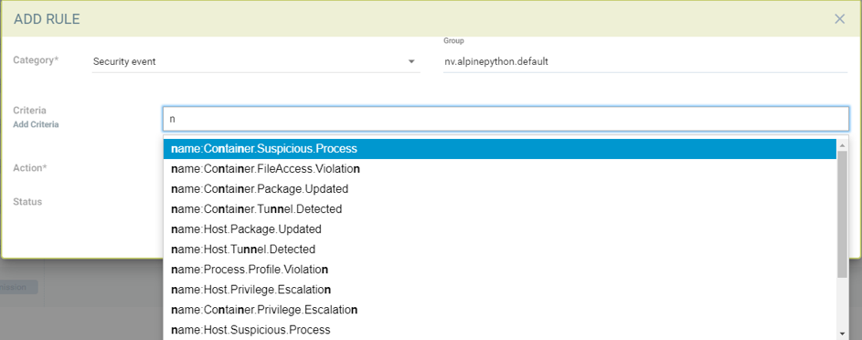

响应规则
策略：响应规则
响应规则提供一个灵活、可定制的规则引擎，以自动化对重要安全事件的响应。触发器可以包括安全事件、漏洞扫描结果、CIS基准、入场控制事件和一般事件。操作包括容器隔离、Webhook和抑制警报。

使用以下内容创建新的响应规则：
-
组。规则将适用于一个组。有关组的更多详细信息以及如何在需要时创建新组，请参见运行时安全策略 → 组部分。
-
类别。这是事件的类型，例如安全事件或CVE漏洞扫描结果。
-
准则。指定一个或多个准则。每个类别将具有不同的可应用准则。例如，通过事件名称、严重性或高CVE的最小数量。
-
Action：选择一个或多个操作。隔离将阻止容器的所有网络进出流量。Webhook要求在设置 → 配置中定义Webhook端点。抑制日志将防止此事件在通知中被记录。

|
所有响应规则都会被评估，以确定它们是否匹配条件/准则。如果有多个规则匹配，将执行每个操作。这与网络规则的行为不同，网络规则是从上到下评估的，只有第一个匹配的规则会被执行。 |
未来的版本中，SUSE® Security将继续添加额外的事件和操作。
响应规则的详细配置
响应规则能够根据特定的安全事件自动执行响应，例如隔离、Webhook和抑制日志。目前，可以在响应规则中定义的事件包括事件日志、安全事件日志、CVE（漏洞扫描）和CIS基准报告。响应规则适用于所有模式：发现、监控和保护，三种模式的行为相同。
如果事件匹配多个规则，将应用多个规则的操作。每个规则可以有多个操作和多个匹配准则。当事件匹配响应规则准则时，所有定义的操作将应用于容器。如果匹配的是主机（而不是容器）事件，目前支持的操作是Webhook和抑制日志。
SUSE® Security中包含6个默认响应规则，设置为状态'`disabled,’，每个类别一个。用户可以修改默认规则以满足他们的要求，或创建新的规则。确保启用任何应应用的规则。

在单个规则中使用多个准则。
一个响应规则中多个准则的匹配逻辑是：
-
对于单个规则中的不同标准类型（例如 name:Network.Violation, name:处理.控制文件.违规），应用“与”操作符
行动
-
隔离的 — 容器已被隔离。请注意，隔离意味着所有网络流量被阻止。 容器将保持运行——只是没有任何网络连接。 Kubernetes 不会启动一个容器来替换被隔离的容器，因为 api-server 仍然能够访问该容器。
-
Webhook - 生成的 webhook 日志
-
抑制日志 — 日志已被抑制 - 包括 syslog 和 webhook 日志
|
为安全事件日志创建响应规则
-
点击“插入到顶部”将规则插入到顶部
-
如果规则需要应用于特定服务组，请选择服务组名称
-
选择类别为安全事件
-
添加事件日志的准则，以便将其包含为匹配准则。
-
选择要应用的操作：隔离、Webhook 或抑制日志
-
启用状态
-
日志级别或进程名称可以作为其他匹配准则。

为事件日志创建响应规则
-
点击“插入到顶部”将规则插入到顶部
-
如果规则需要应用于特定服务组，请选择服务组名称
-
选择事件类别
-
添加要作为匹配准则的事件日志名称。
-
选择要应用的操作——隔离、Webhook 或抑制日志
-
启用状态
-
日志级别可以作为其他匹配准则。


为 CVE 报告类别创建响应规则（日志级别和报告名称作为匹配准则）。
-
点击“插入到顶部”将规则插入到顶部
-
如果规则需要应用于特定服务组，请选择服务组名称
-
选择类别 CVE-报告
-
添加日志级别作为匹配准则或 CVE 报告类型。
-
选择要应用的操作 隔离、Webhook 或抑制日志（隔离不适用于注册表扫描）
-
启用状态


为 CIS 基准创建响应规则（日志级别和基准号作为匹配准则）。
-
点击“插入到顶部”将规则插入到顶部
-
如果规则需要应用于特定服务组，请选择服务组名称
-
选择类别：基准
-
添加日志级别作为匹配准则或基准号，例如：“5.12” 确保容器的根文件系统以只读方式挂载
-
选择要应用的操作：隔离、Webhook 和抑制日志（隔离不适用于主机 Docker 和 Kubernetes 基准）
-
启用状态


可以为响应规则配置的分类准则的完整列表。
请注意，某些准则需要一个值（例如：cve-high:1，name:D.5.4，level:critical），以冒号分隔，而其他准则是预设的，当您开始输入准则时会显示在下拉菜单中。
事件活动
Container.Start
Container.Stop
Container.Remove
Container.Secured
Container.Unsecured
Enforcer.Start
Enforcer.Join
Enforcer.Stop
Enforcer.Disconnect
Enforcer.Connect
Enforcer.Kicked
Controller.Start
Controller.Join
Controller.Leave
Controller.Stop
Controller.Disconnect
Controller.Connect
Controller.Lead.Lost
Controller.Lead.Elected
User.Login
User.Logout
User.Timeout
User.Login.Failed
User.Login.Blocked
User.Login.Unblocked
User.Password.Reset
User.Resource.Access.Denied
RESTful.Write
RESTful.Read
Scanner.Join
Scanner.Update
Scanner.Leave
Scan.Failed
Scan.Succeeded
Docker.CIS.Benchmark.Failed
Kubenetes.CIS.Benchmark.Failed
License.Update
License.Expire
License.Remove
License.EnforcerLimitReached
Admission.Control.Configured // for admission control
Admission.Control.ConfigFailed // for admission control
ConfigMap.Load // for initial Config
ConfigMap.Failed // for initial Config failure
Crd.Import // for crd Config import
Crd.Remove // for crd Config remove due to k8s miss
Crd.Error // for remove error crd
Federation.Promote // for multi-clusters
Federation.Demote // for multi-clusters
Federation.Join // for joint cluster in multi-clusters
Federation.Leave // for multi-clusters
Federation.Kick // for multi-clusters
Federation.Policy.Sync // for multi-clusters
Configuration.Import
Configuration.Export
Configuration.Import.Failed
Configuration.Export.Failed
Cloud.Scan.Normal // for cloud scan nomal ret
Cloud.Scan.Alert // for cloud scan ret with alert
Cloud.Scan.Fail // for cloud scan fail
Group.Auto.Remove
Agent.Memory.Pressure
Controller.Memory.Pressure
Kubenetes.{product-name}.RBAC
Group.Auto.Promote
User.Password.Alert事件（安全事件）
Host.Privilege.Escalation
Container.Privilege.Escalation
Host.Suspicious.Process
Container.Suspicious.Process
Container.Quarantined
Container.Unquarantined
Host.FileAccess.Violation
Container.FileAccess.Violation
Host.Package.Updated
Container.Package.Updated
Host.Tunnel.Detected
Container.Tunnel.Detected
Process.Profile.Violation // container
Host.Process.Violation // host威胁（安全事件）
TCP.SYN.Flood
ICMP.Flood
Source.IP.Session.Limit
Invalid.Packet.Format
IP.Fragment.Teardrop
TCP.SYN.With.Data
TCP.Split.Handshake
TCP.No.Client.Data
TCP.Small.Window
TCP.SACK.DDoS.With.Small.MSS
Ping.Death
DNS.Loop.Pointer
SSH.Version.1
SSL.Heartbleed
SSL.Cipher.Overflow
SSL.Version.2or3
SSL.TLS1.0or1.1
HTTP.Negative.Body.Length
HTTP.Request.Smuggling
HTTP.Request.Slowloris
DNS.Stack.Overflow
MySQL.Access.Deny
DNS.Zone.Transfer
ICMP.Tunneling
DNS.Type.Null
SQL.Injection
Apache.Struts.Remote.Code.Execution
DNS.Tunneling
K8S.externalIPs.MitM合规性
Compliance.Container.Violation
Compliance.ContainerFile.Violation
Compliance.Host.Violation
Compliance.Image.Violation
Compliance.ContainerCustomCheck.Violation
Compliance.HostCustomCheck.Violation
Compliance.Test.Name // D.[1-5].*CVE报告
ContainerScanReport
HostScanReport
RegistryScanReport
PlatformScanReport
cve-name
cve-high
cve-medium
cve-high-with-fix // cve-high-with-fix:N (fixed high vul.>N) cve-high-with-fix:N/D (fixed high vul.>N and reported more than D days ago)